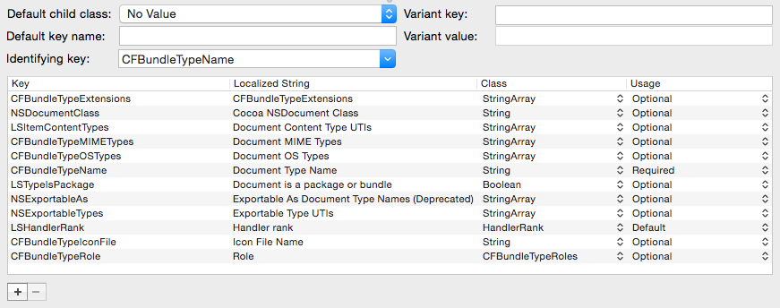

Dictionaries

When selecting a dictionary element, you will see the controls above for editing the definition element.
- Default child class. Allows you to specify what class should be used by default when creating a new child object for a dictionary of this type. For example, if you're editing an class for a dictionary that will contain boolean values, you can select the Boolean class from this pop-up, and any new objects created in that dictionary will be booleans by default.
- Default key name. Similarly, you can also specify what key string should be used for newly created children of the dictionary. PlistEdit Pro uses "New Item" by default when creating, but for example if you want all the keys for a dictionary to be reverse domain name style strings, you could specify "com.mycompany.mykey" as the default key name, which would give the user an idea of what form of key they should be using for this dictionary.
- Identifying key. Specifies a key of the dictionary whose value should be displayed in the Value column for the dictionary when editing a property list file. For example, specifying the "CFBundleName" key for dictionaries in the CFBundleDocumentTypes array in an Info.plist file will display each document type's name in the row for that document type's dictionary, making it easy to scan the list of document types to find the one you want.
- Variant key. Specifies a key to identify this element as being the one to use for a variant dictionary.
- Variant value. Specifies a value to identify this element as being the one to use for a variant dictionary.
Underneath those controls is a table that lets you specify how to handle one or more specifc keys stored in this type of dictionary. Each row has the following attributes:
- Key. This is the dictionary key that you want to define behavior for.
- Localized string. This string, if provided, will be displayed in the Key column when editing the property list instead of the actual key. This allows the definition designer to provide the user with a clearer meaning of the key's purpose than might be discernable from the raw key value.
- Class. This specifies what class the object stored under this key in the dictionary should be. This is the main way that classes are assigned in a property list with multiple levels of hierarchy, with each dictionary defining classe for its children based on their key.
- Usage. This defines how the key is used in the dictionary and can have four values.
- Required: the key must appear in the dictionary, and will result in a warning if the user attempts to delete that key
- Default: though the key isn't required, it will appear by default when a new dictionary of this class is created
- Optional: this key has meaning in the dictionary, but is not required and will not be included in the dictionary by default
- Deprecated: this key should no longer be used in this kind of dictionary